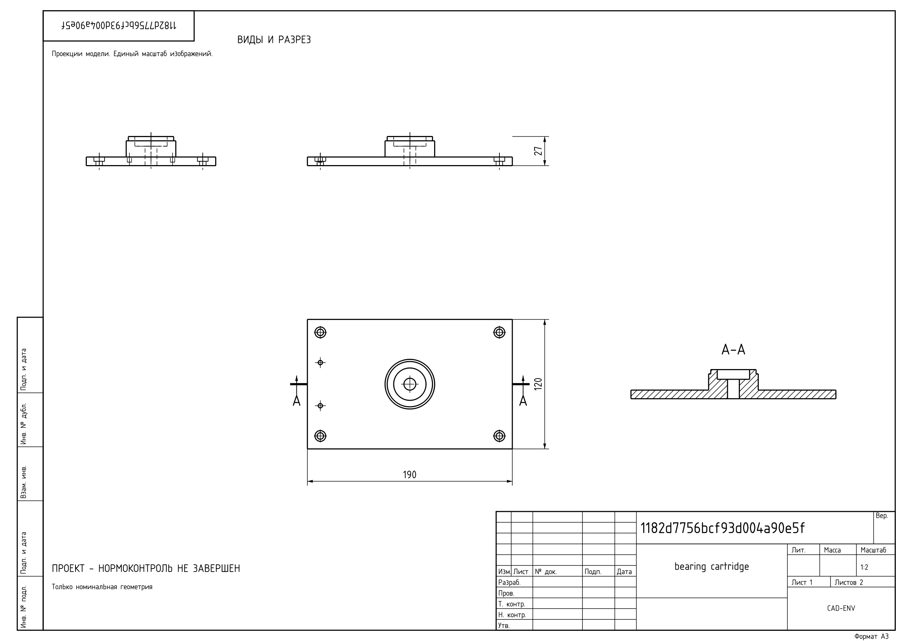
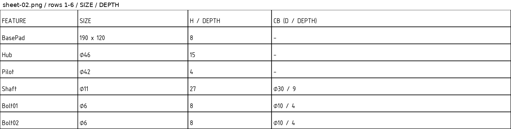
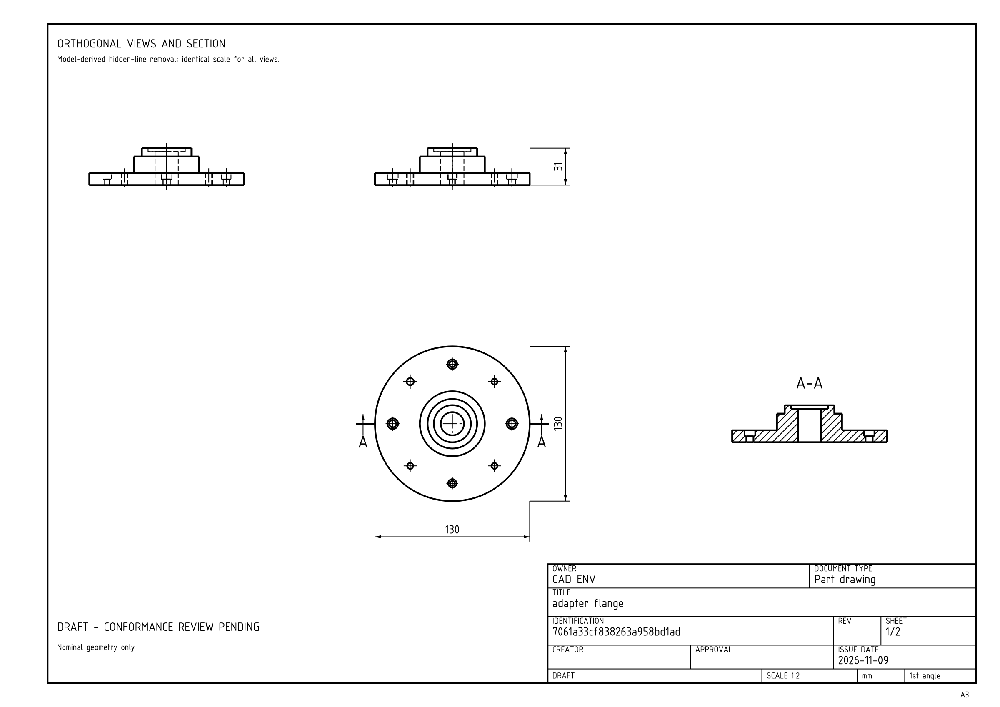
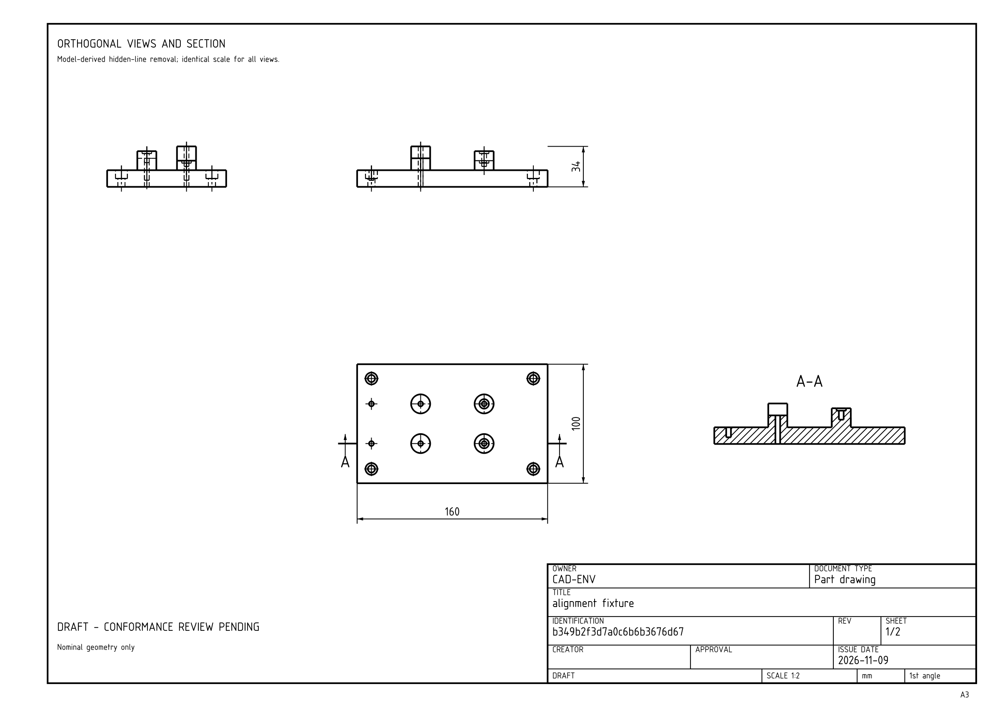

DATA GENERATION / 7 MIN READ
One part, two drawing sets.
How we generate paired ISO and GOST drawing profiles, feed several sheets to a vision model and check the reference part in FreeCAD.
Take the bearing cartridge below. It needs an 11 mm shaft clearance and a 30 mm recess, 9 mm deep, for a 6200 bearing. An agent has to build both cuts. Getting the outer shape right while missing the recess still leaves an incorrect part.
That is the kind of detail we want our training data to teach. We have added a drawing pipeline that starts with an editable FreeCAD model and produces two document sets for the same part: our ISO profile in English and our GOST profile in Russian.


The same bearing-cartridge reference, exported in both profiles. The previews show sheet 1; each PDF contains the complete set.
Start with a part we can verify
Each family has a parameterized construction program: sketches, pads, holes and, where needed, counterbores. We execute it in FreeCAD and compare the resulting volume, bounds and feature dimensions with the specification. The exporter also checks that every hole and boss is attached to its intended support. Failed references do not enter the accepted dataset.
For the bearing example, the 6200 boundary dimensions—10 mm bore, 30 mm outside diameter and 9 mm width—come from NSK’s published data. The housing around it is our own generated nominal design. Fits, retention, seals and load capacity have not been validated.
Two layouts, one geometry
The ISO and GOST exports share the native model, dimensions, reference actions and dataset split. They change the document presentation. This gives us a paired test: can the model reconstruct the same part from either drawing set?
Our ISO profile
A3 sheets, English labels, a 20 mm left margin and 10 mm on the other sides. The title block is 180 mm wide. Views and sections are derived from the native solid.
Our GOST profile
A3 sheets, Russian labels, a 20 mm left margin and 5 mm on the other sides. We check the 185 × 55 mm first-sheet title-block envelope and the 185 × 15 mm continuation envelope. Detailed form and notation review is still pending.
These describe what this version implements, not an exhaustive list of the standards’ requirements. Missing approvals, materials and product-specific tolerances are not filled in automatically.
What the vision model receives
A document set can span several sheets. We keep the original PDF and also export image crops: the views and section from the overview, then the feature table in groups of up to six rows. Position and size/depth crops repeat the feature ID, so the model can join them. Each crop retains its source page and rectangle.
The agent receives these images together with the current CAD state. In the drawing benchmark, the state is JSON; there is no live screenshot of the candidate. Each image is processed within a budget of 327,680 pixels per crop, with a context limit of 32,768 tokens. The estimated lettering size is checked, but actual reading accuracy still has to be measured.

More than one kind of part
The generator now covers nine families: the original plates, multi-support fixtures and terraced flanges, plus six mechanical families. Below are two more examples from the new TRAIN pilot. Each is generated at three structural levels. The levels increase complexity within a family; action counts can overlap between different families.

Adapter flange
A central bore, stepped hub and bolt-circle pattern. Some mounting holes have counterbores.

Alignment fixture
Raised locating bosses, holes on different supports, mounting holes and locating holes.
Turn the drawings into training examples
For SFT we record the drawing images, the state before an action and the correct next action. One part produces several examples. ISO and GOST variants of that part stay in the same split; they are two observations of one design, not two independent parts. We retain the native reference and checks for later rollouts and reward evaluation.
The first paired corpus contains 500 distinct geometries and 1000 document sets. The newer mechanical pilot adds 18 TRAIN parts and 18 separate validation parts, each in both profiles. A valid reference only establishes that the task is executable. We still evaluate the model separately on held-out parts.
Try a small generation run
With FreeCAD installed, this creates one TRAIN part per family and level: 27 geometries and 54 ISO/GOST document sets. The font installer downloads the pinned font and its licenses to a user cache; no font files are bundled in the repository.
make install-drawings python scripts/generate_cad_data.py \ --output artifacts/drawings-demo-v1 \ --suite all --per-family-level 1 \ --split train --seed 41000000
What still needs work
Our first drawing SFT run improved full-part success, but it still misses required recesses and sometimes reuses an existing object name. The next data work targets those failures: reading all table fields, recovering from rejected actions and checking the part before finish. More examples need to cover those decisions, not just repeat already easy steps.
All examples in this article are TRAIN references from the generator. Their metadata and file hashes are linked below.